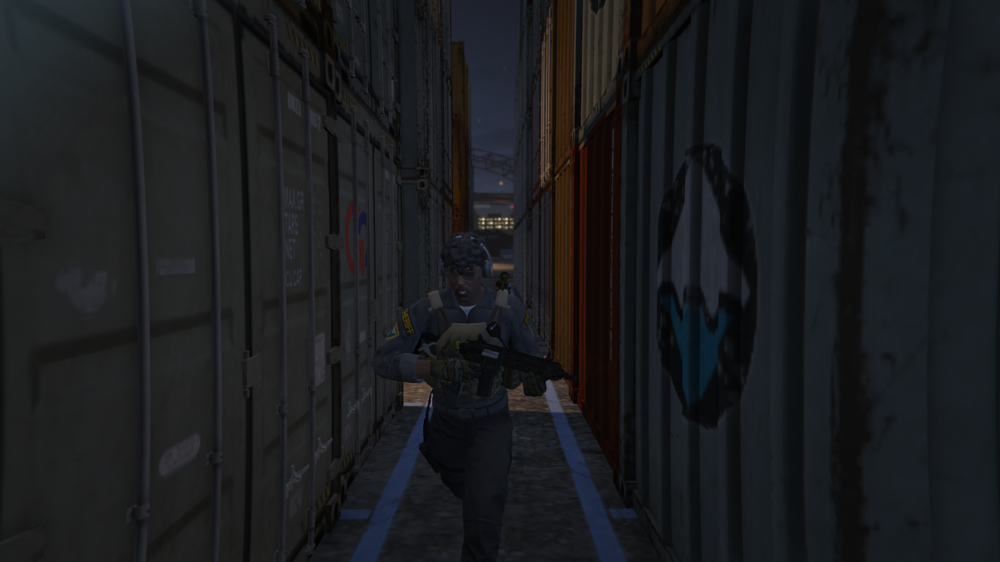
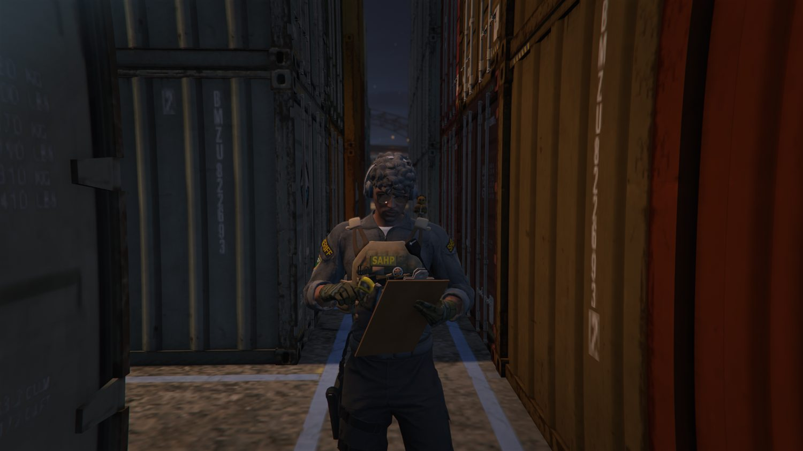

Bewerbung von Friedrich Black für die Zivile Einsatz Gruppe.
★ZEGZIVILE EINSATZ GRUPPE
01
Persönliches Profil
Alles über ... mich.
Mein Name ist Friedrich Black. Als 14 | Lieutenant der San Andreas Highway Patrol bewerbe ich mich mit großer Überzeugung für die Vize-Leitung der ZEG.
Die ZEG steht für diskrete Arbeit, präzise Aufklärung und verlässliche Unterstützung bei der Beweissicherung und Analyse über Fams und Gangs. Die Verantwortung für diese Abteilung die solche Aufgaben und solch eine Arbeit verfolgt bin ich bereit zu übernehmen.
Organisation
SAHP
Reisepassnummer
185454
Derzeitiger Rang
14 · Lieutenant
Bewerbung
Vize-Leitung der ZEG
Ich habe das Auge dafür, wenn ich mich als ZEG Vize unter die Probe stellen kann
Sehen, was andere nicht sehen.
Als spezialisierte Einheit arbeitet die Zivile Einsatz Gruppe dort, wo Diskretion und ein klarer Blick entscheidend sind. Von verdeckten Einsätzen über Observation und Aufklärung bis zur Beweissicherung, Analyse und Unterstützung anderer Einheiten: Die ZEG kann einen klaren Überblick verschaffen, bevor das FIB in Aktion tritt.
Diese Aufgabe verlangt Vertrauen, Einsatzbereitschaft und ein Team, das sich aufeinander verlassen kann.
Observation & Aufklärung
Verdeckte Einsätze
Beweissicherung & Analyse
Wantedjagd und Globals/Locals anfahren

02
Stärken
Was ich als Vize umsetzen will.
In solch einer Position zählen für mich nicht nur Entscheidungen, sondern wie man mit Menschen erstmal umgeht und Verantwortung tragen kann.
01
✦
Freundlichkeit
Ich begegne Kolleginnen, Kollegen und allen Bewohnerinnen und Bewohnern des Staates stets respektvoll und offen. Ein freundlicher Umgang ist für mich die Grundlage guter Zusammenarbeit und alles andere sollte am Arbeitsplatz nicht geduldet werden. Darauf lege ich auch immer Acht, dass stets die Mitglieder sich vorbildlich zu verhalten haben.
02
⊞
Teamfähigkeit
Ich arbeite strukturiert in dem Leitungs-Team miteinander, bringe mich aktiv ein (mit z. B. Verbesserungsvorschlägen, Ideen, die die ZEG attraktiver gestalten usw.) und verliere das Ziel nicht aus dem Blick. Außerdem bin ich der Hauptleitung zu jedem Zeitpunkt zur Hilfe und nehme Befehle höflich entgegen. Ich versuche aber unter anderem auch die Abteilungsmitglieder zu einem starken Team zu formen.
03
◌
Verständnis
Ich höre zu, versetze mich in die Lage meines Gegenübers und bleibe auch in anspruchsvollen Situationen höflich und sachlich. Damit kann ich Vertrauen innerhalb der Abteilung schaffen + eine angenehme Umgebung/Atmosphäre. Aber dieses Verhalten erwarte ich selbstverständlich auch von den Mitarbeitern und versuche das tagtäglich zu fördern.
04
↗
Zuverlässigkeit
Auf mich soll man immer Verlass haben können. Wo Hilfe benötigt wird, bin ich zur Stelle um zu unterstützen und gewissenhafte und hilfreiche Ratschläge zu geben. Dies möchte ich ebenso von meinen Mitarbeitern erwarten. Ich brauche verlässliche Mitarbeiter, die sich auch untereinander helfen können und uns (der Leitung) zur Hilfe stehen.
03
Meine Laufbahn
Erfahrung, die ihren Wert hat.
Mein Weg brachte mich durch die verschiedensten Organisationen. Jeder Anhaltspunkt in meiner Karriere hat mir gezeigt, wie wichtig klare Strukturen, gute Arbeit (größtenteils im Team) und ein verlässliches Miteinander wirklich sind.
ZUVOR
High Command (stellv. Abteilungsleitung) · EMS
Als Teil der Leitung der Ausbildungsstation übernahm ich Verantwortung für organisatorische Aufgaben und war für die Hauptleitung immer da. Konnte dennoch eigene Verantwortung tragen und selbstständig arbeiten.
ZUVOR
High Command (stellv. Abteilungsleitung) · NG
Auch in der National Guard durfte ich als stellvertretender Abteilungsleiter der Ausbildung Führungserfahrung sammeln und für neue Mitglieder Grundbausteine legen. Das war für mich der beste Part
HEUTE
Lieutenant 14 · SAHP
Seit meinem Einstieg beim SAHP sammle ich aktiv Erfahrung im exekutiven Dienst. Jetzt möchte ich meinen Aufgabenbereich erweitern und den nächsten Schritt wagen.

04
Meine Motivation
Anderen einen guten Anfang ermöglichend.
Seit Beginn meiner Laufbahn verfolge ich ein klares Ziel: Menschen zu helfen. Ich möchte für andere einen Grundstein schaffen, damit ihnen der Einstieg leichter fällt – genauso, wie auch mir geholfen wurde. Doch seitdem ich hier bin, hat sich etwas verändert... Ich möchte nicht eine gute Abteilung führen, sondern die Beste. Und dann muss man sich in manchen Situationen dementsprechend verhalten. D. h., ich kann es nicht jedem leicht machen. Denn ich brauche ein verlässliches und exzellentes Team.
Als Leitung der ZEG möchte ich mehr Verantwortung übernehmen, meine Erfahrungen gezielt weitergeben und zeigen, dass ich auch im SAHP dieser Aufgabe gewachsen bin. Mein Anspruch ist eine ZEG, wo man aktiv, gezielt und miteinander sich gegenseitig stärkt und für andere jederzeit ein verlässlicher Partner ist.
Bereit für den nächsten Schritt? Ein Schritt voraus?
Vielen Dank für die Zeit und die Überprüfung meiner Bewerbung und dieser unglaublichen Chance. Ich freue mich darauf, mich persönlich vorstellen zu können, und die ZEG mit Zuverlässigkeit, Erfahrung und Verantwortung zu co-führen.